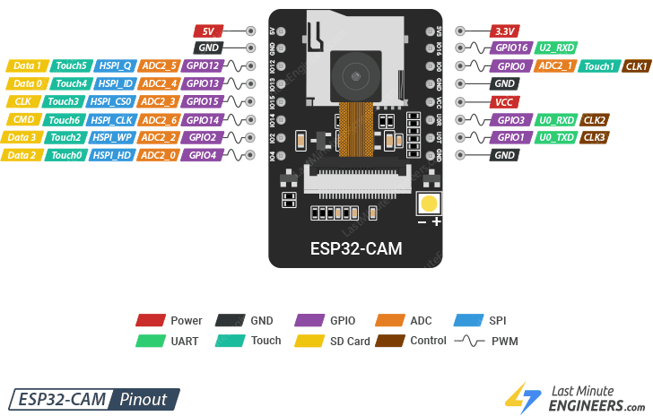

ESP32 and ESP32-CAM Development Guide
ESP32-CAM 是一款整合了 ESP32 晶片與 OV2640 攝影機模組的微型開發板。由於其體積限制，並未內建 USB 燒錄晶片。

請使用 USB 轉 TTL (USB-to-TTL) 線進行連接，並依照下表完成電路跳線：
| USB-to-TTL 腳位 | ESP32-CAM 腳位 | 功能說明 |
|---|---|---|
| 5V | 5V | 電源輸入 (Power) |
| GND | GND | 共地 (Ground) |
| TXD | U0R | 資料接收 (Receive) |
| RXD | U0T | 資料傳送 (Transmit) |
| GND | GPIO 0 | 燒錄模式跳線 (Flash Mode Jumper) |